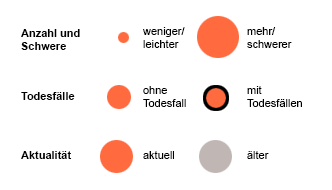

Die Karte zeigt, wo in Köln häufig Verkehrsunfälle passieren. Offiziell nennt man diese Orte »Unfallhäufungsstellen«.
Die Größe der Kreise gibt die Anzahl der Unfälle an einer Stelle und die Schwere der Unfälle wieder. Unfallstellen mit Todesopfern sind außerdem mit einer schwarzen Umrandung versehen. Die Farbe der Kreise zeigt an, wie lang es her ist, dass ein Ort zuletzt als Unfallhäufungsstelle gemeldet wurde. Je blasser die Farbe, desto länger liegt dies zurück. Leuchtend orangefarbene Kreise hingegen markieren Orte, wo (auch) in jüngerer Zeit vermehrt Unfälle passiert sind.
» Weitere Informationen im Offenes Köln Blog
Konzept/Design/Umsetzung: Marian Steinbach
Rohdaten: JSON oder Google Docs
Daten-Lizenz: Open Data Commons Open Database License (ODbL)
Irrtümer vorbehalten